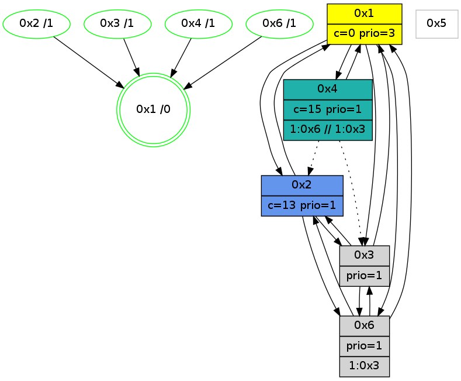

>> << IDX [start] -100 -25 -5 +0 +5 +25 +100 [1110.34572911]
 Previous packets
1105.000445 [Hello(4): seq=912 sym=1 asym=2,3 sysInfo=hasWarning stat=1:12,13,12,0/2:1,8,2,1/3:2,15,2,3]
1105.003526 [Color(4) seq=193 @0:0 color=15/16 prio=1 c=0,7,c;1,4,6,8,9,b,d,e]
----------------------------------------------------------------------
1105.424649 beacon01(adaf) #0 coord=01,02,05,03,04,06 cycle=432.0ms assoc
-- color-indic=1 64 d4 06
1105.434609 beacon02(adaf) #0 coord=01,02,05,03,04,06 cycle=432.0ms assoc 64 85 f9
1105.444611 beacon05(adaf) #0 coord=01,02,05,03,04,06 cycle=432.0ms assoc 64 23 d3
1105.454609 beacon03(adaf) #0 coord=01,02,05,03,04,06 cycle=432.0ms assoc 64 bf f7
1105.464612 beacon04(adaf) #0 coord=01,02,05,03,04,06 cycle=432.0ms assoc 64 19 dd
1105.474612 beacon06(adaf) #0 coord=01,02,05,03,04,06 cycle=432.0ms assoc 64 6d c1
1105.486352 [Hello(3): seq=911 sym=6,2,1 sysInfo=hasWarning stat=6:3,2,7,4/2:3,3,4,0/1:15,1,7,1]
1105.488881 [Color(2) seq=297 @0:0 color=13 prio=1 c=0,7,c,e,f;1,4,6,8,9,b]
1105.491789 [Hello(1): seq=813 sym=2,4,6,3 sysInfo=hasWarning,coloring-mode-on,ColoringModeRequestCalled stat=2:4,1,9,0/4:7,6,8,2/6:8,0,3,0/3:7,8,5,1]
1105.495239 [Color(1) seq=339 @0:0 color=0 prio=3 c=c,d,f;7,e]
----------------------------------------------------------------------
1105.916756 beacon01(adaf) #0 coord=01,02,05,03,04,06 cycle=432.0ms assoc
-- color-indic=1 64 10 69
1105.926717 beacon02(adaf) #0 coord=01,02,05,03,04,06 cycle=432.0ms assoc 64 41 96
1105.936717 beacon05(adaf) #0 coord=01,02,05,03,04,06 cycle=432.0ms assoc 64 e7 bc
1105.946717 beacon03(adaf) #0 coord=01,02,05,03,04,06 cycle=432.0ms assoc 64 7b 98
1105.956718 beacon04(adaf) #0 coord=01,02,05,03,04,06 cycle=432.0ms assoc 64 dd b2
1105.966719 beacon06(adaf) #0 coord=01,02,05,03,04,06 cycle=432.0ms assoc 64 a9 ae
1105.978448 [Hello(2): seq=1399 sym=3,6,1 sysInfo=hasWarning stat=3:15,12,9,1/6:7,0,4,0/1:13,12,10,0]
1105.982898 [Hello(4): seq=913 sym=1 asym=2,3 sysInfo=hasWarning stat=1:13,14,12,0/2:1,9,2,1/3:3,15,2,3]
1105.986627 [Color(4) seq=194 @0:0 color=15/16 prio=1 c=0,7,c;1,4,6,8,9,b,d,e]
----------------------------------------------------------------------
1106.408865 beacon01(adaf) #0 coord=01,02,05,03,04,06 cycle=432.0ms assoc
-- color-indic=1 64 5d 6e
1106.418826 beacon02(adaf) #0 coord=01,02,05,03,04,06 cycle=432.0ms assoc 64 0c 91
1106.428826 beacon05(adaf) #0 coord=01,02,05,03,04,06 cycle=432.0ms assoc 64 aa bb
1106.438827 beacon03(adaf) #0 coord=01,02,05,03,04,06 cycle=432.0ms assoc 64 36 9f
1106.448827 beacon04(adaf) #0 coord=01,02,05,03,04,06 cycle=432.0ms assoc 64 90 b5
1106.458827 beacon06(adaf) #0 coord=01,02,05,03,04,06 cycle=432.0ms assoc 64 e4 a9
1106.470563 [Hello(3): seq=912 sym=6,2,1 sysInfo=hasWarning stat=6:3,2,7,4/2:3,4,4,0/1:0,2,7,1]
1106.472461 PARSE ERROR************************
Traceback (most recent call last):
File "PacketAnalysis.py", line 167, in showOperaPacket
structPacket = OperaPacketParse.parsePacket(rawPacket)
File "../../pkg-python/HipSens/Core/OperaPacketParse.py", line 461, in parsePacket
return parseHelloMessage(data)
File "../../pkg-python/HipSens/Core/OperaPacketParse.py", line 125, in parseHelloMessage
struct.unpack("!H",linkList[:2])[0])
error: unpack requires a string argument of length 2
48 20 01 00 03 2e 00 02 02 08 02 00 04 00 06 00 03 00 53 04 00 86 00 00 4c 08 09 14 28 78 03 08 15 87 4d b3
1106.476244 [STC(1) #0.190 new-neigh,tree-change,inconsistent-stability,stable,to-color d=0]
1106.478478 [Color(2) seq=298 @0:0 color=13 prio=1 c=0,7,c,e,f;1,4,6,8,9,b]
1106.481198 [Color(1) seq=340 @0:0 color=0 prio=3 c=c,d,f;7,e]
----------------------------------------------------------------------
1106.900972 beacon01(adaf) #0 coord=01,02,05,03,04,06 cycle=432.0ms assoc
-- color-indic=1 64 99 01
1106.910933 beacon02(adaf) #0 coord=01,02,05,03,04,06 cycle=432.0ms assoc 64 c8 fe
1106.920933 beacon05(adaf) #0 coord=01,02,05,03,04,06 cycle=432.0ms assoc 64 6e d4
1106.930933 beacon03(adaf) #0 coord=01,02,05,03,04,06 cycle=432.0ms assoc 64 f2 f0
1106.940934 beacon04(adaf) #0 coord=01,02,05,03,04,06 cycle=432.0ms assoc 64 54 da
1106.950934 beacon06(adaf) #0 coord=01,02,05,03,04,06 cycle=432.0ms assoc 64 20 c6
1106.962680 [Hello(2): seq=1400 sym=3,6,1 sysInfo=hasWarning stat=3:0,12,9,1/6:7,0,4,0/1:13,13,10,0]
1106.965208 [Hello(4): seq=914 sym=1 asym=2,3 sysInfo=hasWarning stat=1:14,15,13,0/2:1,10,2,1/3:4,15,2,3]
1106.967824 [TreeStatus(3)-.->1 #0.190 new-neigh,tree-change,inconsistent-stability,stable child=1]
1106.970036 [STC(4)->1 #0.190 new-neigh,tree-change,inconsistent-stability,stable,to-color d=1]
1106.972211 [Hello(6): seq=827 sym=2,1,3 sysInfo=hasWarning stat=2:15,10,7,1/1:1,3,5,0/3:4,9,3,11]
1106.974592 [Color(3) seq=209 @0:0 prio=1 c=0,d,f;7,c,e]
1106.978250 [STC(6)->1 #0.190 new-neigh,tree-change,inconsistent-stability,stable,to-color d=1]
1106.981877 [Color(4) seq=195 @0:0 color=15/16 prio=1 c=0,7,c;1,4,6,8,9,b,d,e]
1106.985620 [TreeStatus(6)-.->1 #0.190 new-neigh,tree-change,inconsistent-stability,stable child=1]
----------------------------------------------------------------------
1107.393080 beacon01(adaf) #0 coord=01,02,05,03,04,06 cycle=432.0ms assoc
-- color-indic=1 64 d5 b1
1107.403041 beacon02(adaf) #0 coord=01,02,05,03,04,06 cycle=432.0ms assoc 64 84 4e
1107.413041 beacon05(adaf) #0 coord=01,02,05,03,04,06 cycle=432.0ms assoc 64 22 64
1107.423041 beacon03(adaf) #0 coord=01,02,05,03,04,06 cycle=432.0ms assoc 64 be 40
1107.433041 beacon04(adaf) #0 coord=01,02,05,03,04,06 cycle=432.0ms assoc 64 18 6a
1107.443043 beacon06(adaf) #0 coord=01,02,05,03,04,06 cycle=432.0ms assoc 64 6c 76
1107.454773 [Hello(3): seq=913 sym=6,2,1 sysInfo=hasWarning stat=6:3,2,8,5/2:4,5,4,0/1:1,3,8,1]
1107.457306 [Color(2) seq=299 @0:0 color=13 prio=1 c=0,7,c,e,f;1,4,6,8,9,b]
1107.458948 [Hello(1): seq=815 sym=2,4,6,3 sysInfo=hasWarning,coloring-mode-on,ColoringModeRequestCalled stat=2:5,1,9,0/4:8,8,9,2/6:9,0,4,1/3:8,9,6,2]
1107.461775 [Color(1) seq=341 @0:0 color=0 prio=3 c=c,d,f;7,e]
----------------------------------------------------------------------
1107.885188 beacon01(adaf) #0 coord=01,02,05,03,04,06 cycle=432.0ms assoc
-- color-indic=1 64 11 de
1107.895150 beacon02(adaf) #0 coord=01,02,05,03,04,06 cycle=432.0ms assoc 64 40 21
1107.905149 beacon05(adaf) #0 coord=01,02,05,03,04,06 cycle=432.0ms assoc 64 e6 0b
1107.915149 beacon03(adaf) #0 coord=01,02,05,03,04,06 cycle=432.0ms assoc 64 7a 2f
1107.925150 beacon04(adaf) #0 coord=01,02,05,03,04,06 cycle=432.0ms assoc 64 dc 05
1107.935150 beacon06(adaf) #0 coord=01,02,05,03,04,06 cycle=432.0ms assoc 64 a8 19
1107.946897 [Hello(2): seq=1401 sym=3,6,1 sysInfo=hasWarning stat=3:1,13,9,2/6:8,0,5,1/1:14,14,10,0]
1107.951331 [Hello(4): seq=915 sym=1 asym=2,3 sysInfo=hasWarning stat=1:15,0,13,0/2:2,11,2,1/3:5,15,2,3]
1107.955048 [Color(4) seq=196 @0:0 color=15/16 prio=1 c=0,7,c;1,4,6,8,9,b,d,e]
----------------------------------------------------------------------
1108.377296 beacon01(adaf) #0 coord=01,02,05,03,04,06 cycle=432.0ms assoc
-- color-indic=1 64 4f bf
1108.387258 beacon02(adaf) #0 coord=01,02,05,03,04,06 cycle=432.0ms assoc 64 1e 40
1108.397257 beacon05(adaf) #0 coord=01,02,05,03,04,06 cycle=432.0ms assoc 64 b8 6a
1108.407257 beacon03(adaf) #0 coord=01,02,05,03,04,06 cycle=432.0ms assoc 64 24 4e
1108.417257 beacon04(adaf) #0 coord=01,02,05,03,04,06 cycle=432.0ms assoc 64 82 64
1108.427258 beacon06(adaf) #0 coord=01,02,05,03,04,06 cycle=432.0ms assoc 64 f6 78
1108.439004 [Hello(3): seq=914 sym=6,2,1 sysInfo=hasWarning stat=6:3,2,8,5/2:4,6,4,0/1:2,4,8,1]
1108.441119 [Hello(1): seq=816 sym=2,4,6,3 sysInfo=hasWarning,coloring-mode-on,ColoringModeRequestCalled stat=2:5,1,9,0/4:9,9,9,2/6:9,0,4,1/3:8,9,6,2]
1108.443244 [Color(6) seq=278 @0:0 prio=1 >1.@3 c=0,d;7,c,e,f]
1108.445192 [Color(2) seq=300 @0:0 color=13 prio=1 c=0,7,c,e,f;1,4,6,8,9,b]
1108.447595 [Color(1) seq=342 @0:0 color=0 prio=3 c=c,d,f;7,e]
----------------------------------------------------------------------
1108.869403 beacon01(adaf) #0 coord=01,02,05,03,04,06 cycle=432.0ms assoc
-- color-indic=1 64 8b d0
1108.879366 beacon02(adaf) #0 coord=01,02,05,03,04,06 cycle=432.0ms assoc 64 da 2f
1108.889365 beacon05(adaf) #0 coord=01,02,05,03,04,06 cycle=432.0ms assoc 64 7c 05
1108.899367 beacon03(adaf) #0 coord=01,02,05,03,04,06 cycle=432.0ms assoc 64 e0 21
1108.909365 beacon04(adaf) #0 coord=01,02,05,03,04,06 cycle=432.0ms assoc 64 46 0b
1108.919365 beacon06(adaf) #0 coord=01,02,05,03,04,06 cycle=432.0ms assoc 64 32 17
1108.930095 [STC(1) #0.191 new-neigh,tree-change,inconsistent-stability,stable,to-color d=0]
1108.932195 [Hello(4): seq=916 sym=1 asym=2,3 sysInfo=hasWarning stat=1:0,1,13,0/2:2,12,2,1/3:6,15,2,3]
1108.935288 [Color(4) seq=197 @0:0 color=15 prio=1 >1.@6 >>1.@3 c=0,7,c;1,4,6,8,9,b,d,e]
----------------------------------------------------------------------
1109.361513 beacon01(adaf) #0 coord=01,02,05,03,04,06 cycle=432.0ms assoc
-- color-indic=1 64 c7 60
1109.371475 beacon02(adaf) #0 coord=01,02,05,03,04,06 cycle=432.0ms assoc 64 96 9f
1109.381474 beacon05(adaf) #0 coord=01,02,05,03,04,06 cycle=432.0ms assoc 64 30 b5
1109.391473 beacon03(adaf) #0 coord=01,02,05,03,04,06 cycle=432.0ms assoc 64 ac 91
1109.401475 beacon04(adaf) #0 coord=01,02,05,03,04,06 cycle=432.0ms assoc 64 0a bb
1109.411476 beacon06(adaf) #0 coord=01,02,05,03,04,06 cycle=432.0ms assoc 64 7e a7
1109.423051 [STC(4)->1 #0.191 new-neigh,tree-change,inconsistent-stability,stable,to-color d=1]
1109.425140 [STC(2)->1 #0.191 new-neigh,tree-change,inconsistent-stability,stable,to-color d=1]
1109.427083 [Hello(3): seq=915 sym=6,2,1 sysInfo=hasWarning stat=6:3,3,8,5/2:4,7,4,0/1:3,5,9,1]
1109.429470 [Color(2) seq=301 @0:0 color=13 prio=1 c=0,7,c,e,f;1,4,6,8,9,b]
1109.434408 [STC(3)->1 #0.191 new-neigh,tree-change,inconsistent-stability,stable,to-color d=1]
1109.436288 [Hello(1): seq=817 sym=2,4,6,3 sysInfo=hasWarning,coloring-mode-on,ColoringModeRequestCalled stat=2:5,1,9,0/4:9,9,9,2/6:9,0,4,1/3:8,9,6,2]
1109.440378 [Color(1) seq=343 @0:0 color=0 prio=3 c=c,d,f;7,e]
----------------------------------------------------------------------
1109.853621 beacon01(adaf) #0 coord=01,02,05,03,04,06 cycle=432.0ms assoc
-- color-indic=1 64 03 0f
1109.863582 beacon02(adaf) #0 coord=01,02,05,03,04,06 cycle=432.0ms assoc 64 52 f0
1109.873582 beacon05(adaf) #0 coord=01,02,05,03,04,06 cycle=432.0ms assoc 64 f4 da
1109.883584 beacon03(adaf) #0 coord=01,02,05,03,04,06 cycle=432.0ms assoc 64 68 fe
1109.893583 beacon04(adaf) #0 coord=01,02,05,03,04,06 cycle=432.0ms assoc 64 ce d4
1109.903584 beacon06(adaf) #0 coord=01,02,05,03,04,06 cycle=432.0ms assoc 64 ba c8
1109.915325 [Hello(2): seq=1403 sym=3,6,1 sysInfo=hasWarning stat=3:2,14,10,2/6:8,0,5,1/1:15,0,11,0]
1109.919858 [Hello(4): seq=917 sym=1 asym=2,3 sysInfo=hasWarning stat=1:1,2,14,0/2:2,12,2,1/3:7,15,3,3]
1109.923575 [Color(4) seq=198 @0:0 color=15 prio=1 >1.@6 >>1.@3 c=0,7,c;1,4,6,8,9,b,d,e]